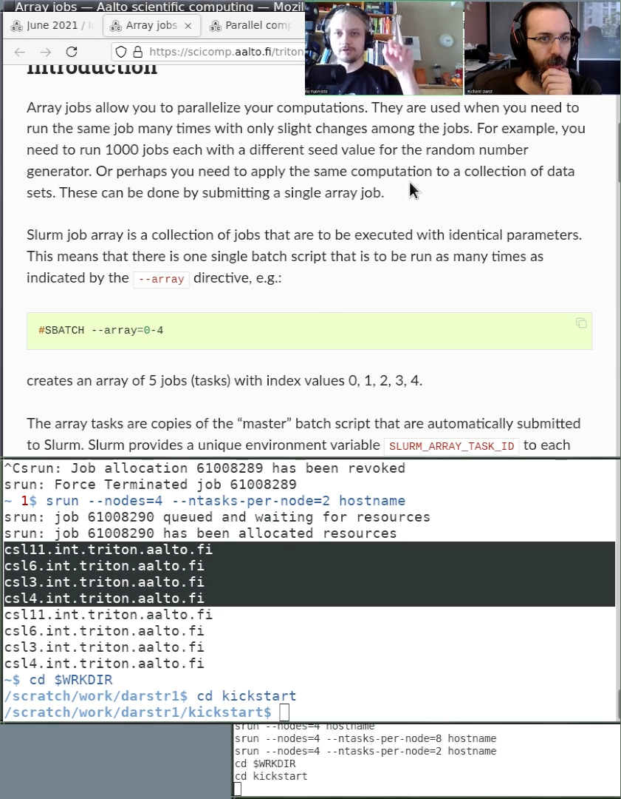

Aalto Scientific Computing’s kickstart course¶
About¶
Me
Computational researcher for 15 years
Five years ago, joined HPC team
Now, usability and teaching of computing
Aalto Scientific Computing
Aalto University, Finland
Small team, nine people
We can’t really operate on an industrial scale, instead we operate based on passion and complementing the big people.
Part of “Finnish Grid Infrastructure” (current name: Finnish Computing Competence Infrastructure).
We are not part of CSC.
The big picture¶
Crisis of Computing
Term I have coined
Computing needed by almost everyone
Many researchers arrive unprepared to do their work
Easy solution: “if you aren’t ready it’s not our problem, we are too big for you”. Often used by big centers.
We focus on helping everyone to do their work.
Environment vs diversity vs learning (a talk by me): https://www.youtube.com/watch?v=z1VS1wleN-o
Scientific Computing in Practice
Name for our training series.
Practical courses, everything from shell basics to MPI.
Somewhat more focus on basics (because others handle advanced better).
Hand-on scientific computing
Online course to fill in all knowledge that researchers may have.
Incorporates Carpentries, CodeRefinery, Kickstart, and more.
Not a course but a map (since everything already exists somewhere).
Aalto Research Software Engineers
Our Research Software Engineering service (my current main project).
When people need to do something but don’t have time or skills to do it themselves.
About the kickstart course¶
https://scicomp.aalto.fi/training/scip/summer-kickstart/
Since 2014(?) or so
Continually refined over time
Starting point for new users of our HPC cluster
Not focused on “high-performance” but “computing”
Contents (typical)
Day 1, general background, lectures. Rotating topics each time:
HPC crash course
Shell crash course
Overview to computing workflows
Git intro
CSC computing resources
Day 2-3, hands-on with the cluster
Focused around our cluster tutorials: https://scicomp.aalto.fi/triton/#tutorials
Sharing the kickstart course¶
Remote work ⇒ closer to everyone else in the world
Why not open our course to others, even if we use our cluster as an example?
Con: examples don’t necessarily work out of the box.
Pro: something that other sites simply didn’t have.
Pro: many important messages are independent of the cluster.
We took the opportunity to standardize our Finnish clusters a little bit.
Feedback: even though there are some difficulties, people really, really liked having it available.
Timeline of sharing
June 2020: Online, joint with others in Finland. Other countries invited (via CodeRefinery).
February 2021: developed with general day 1, day 2-3 open. First MOOC course.
June 2021: MOOC, fully streamed, distributed.
260 registered → 200 people on day 1 → 150 on day 3.
Current teaching strategy¶
A lot like CodeRefinery.
We try to be interactive and have examples.
Realize there are different levels of people
Some want to watch passively, they need to learn conventions of the community before they dive in.
Some want to do examples.
Some are quite advanced and will move forward quickly.
Co-teaching
Never teach alone. Every lesson has two people teaching as a discussion.
This is a key to making things interactive and exciting when you have a large audience (and probably a small one, too).
HackMD for questions.
Voice doesn’t scale. Chat doesn’t scale.
HackMD is like a log: always write at bottom. Others comment to answer questions.
Answers saved for future reference (and so you don’t have to follow it during the course).
Tech setup¶
CodeRefinery MOOC: https://coderefinery.github.io/manuals/coderefinery-mooc/
There is not one Zoom meeting, instead “TV studio” and “audience”
TV studio has instructors and production crew
Broadcast to entire world via Twitch
Separate Zoom with students (who want to) and helpers
All student feedback comes through HackMD (with hundreds of people no student talks anyway).

MOOC strategy. Note that instructors are not in the same meeting as students.¶
Portrait screenshare
I believe that portrait is the way to go.
Half the screen for the attendees to do their own work.
Even in other presentations such as this one, you will probably do something else anyway and may as well make the multitasking easy.
Video frame:
A typical frame from our presentation. The mixing is done via OBS (Open Broadcaster Software), which has many nice features.¶
Sample learner layout:

A sample learner layout. Note the right side is free for own work.¶
{kind=link}
Advantages¶
Feedback sample
I attended several “top” conferences/workshops/seminars as well as videolectures this past year in their virtual implementations, and this event is easily the best out of all of them when it comes down to presentations and audience participation!
HackMD is a much better tool for audience interaction and answering questions.
No privacy concerns behind recordings, recording is published the same day because no editing needed.
We can allow anyone to watch while not giving out Zoom link publicly.
Videos available immediately for instant review and catching up (Twitch instant + YouTube soon)
Instructor backchannel talk during breaks does not reach the audience.
Instructor workload reduced because number increases with scaling.
Team teaching is much, much more engaging.
The course is overall fun to give.
Problems¶
HPC teaching always a bit of problems with incompatible clusters.
Tech setup: Takes some getting used to, I still have to train others to do it.
I built a power computer to run this, many others don’t have it.
My broadcasting workstation during a CodeRefinery workshop. For Kickstart it was slightly simpler even though I was teaching, because I was only in the instructor Zoom meeting.¶
Future prospects¶
We will probably keep going with this strategy for our large courses.
There is really no reason not to invite the whole world.
HackMD allows silent participation, for example in an office with headphones.
Any other site may recommend users to attend our courses via:
Only watching, no breakout rooms.
Make their own Zoom meeting for breakout rooms, no need to coordinate with us.
Join our Zoom meeting.
For HPC teaching, can we standardize clusters some?
Make sensible defaults so that generic examples will work across clusters. documentation-driver cluster design*.
Even if we don’t do this, others can benefit from our course.
Questions:
Do we run generic courses or localized?
Add in local-specific days in conjunction with generic teaching days?
Can we combine even more, internationally?
Is CodeRefinery a platform for this?
Problems:
Tech setup needs to be moved to cloud somehow (off my desktop)